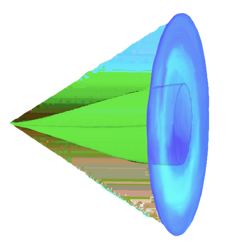
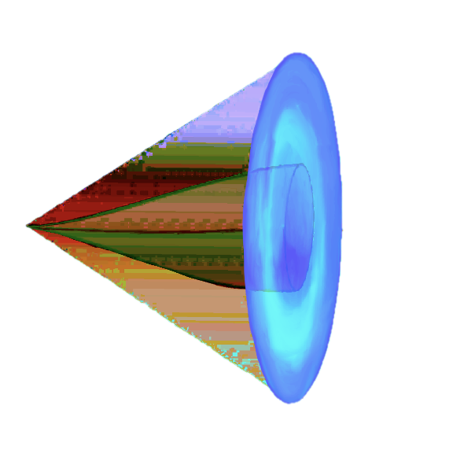
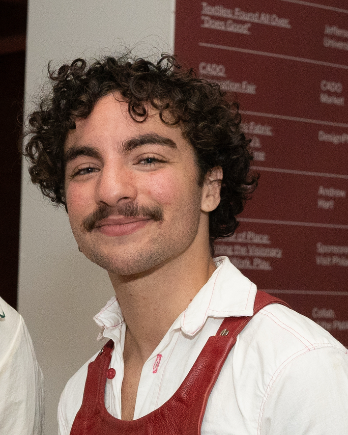
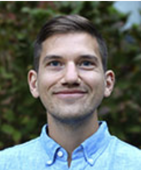

Download the zine (PDF)
Download the zine (PDF)


brought to you by Micah Lockman-Fine and Tim Gorichanaz
Download the zine (PDF)
“Frictional Technologies” is a workbook and live archive project created for the 2026 4S Conference, “Technopower/Technoscientific Futures.” It builds on past speculative futuring work by Lockman-Fine and Gorichanaz, including “What Can We Build? A Futuring Exercise.” Both are efforts to stimulate speculative thinking during everyday interactions.
We have two primary goals with both workbooks. The first is to extend speculation from classroom, museum, or even formal workshop settings into everyday life. This relies on a person’s ability to reflect on their own personal and political experiences, “futuring” by creating individual diagrams of self and system that lead towards collective action.
The second is to help people engage more critically with technology. Grounding in personal experience, memory, frustration and desire, we hope to help people see what is working for them and what is not during digital interactions. Then, we hope to guide people not towards immediate re-design, but instead towards research and collaboration.
“Frictional Technologies” is also a live archive project. At 4S, we will install a station for attendees to engage in multimodal, asynchronous, guided conversations about sociotechnical artifacts and their possible futures. On this website, we will store audio and submitted workbooks as they are received, so that visitors can share images and outcomes of these exercises and connect with others. As this archive grows, we’ll review it regularly to gain insights into how people identify, expand and communicate their desires regarding the future, and what methods work best for helping them do so.
Through our work, we help make systems of power embedded in everyday digital technologies visible, then support people in imagining small-scale alternatives that support autonomy, sociality, and healthy futures. Our work invites us toward a future that is not singular, distant or techno-utopian, but rather one that takes shape through the work of countless hands. In addition to its inherent value, we offer methodological inspiration for design educators, creative technologists, students, and interaction designers searching for practical speculative methods for critiquing and visioning beyond technopower.

Micah is a design researcher exploring future imaginaries through speculative design and human-computer interaction. He creates workshops, exhibitions, performances, and academic research. He focuses on building critical capacity in users-visitors-audiences. He draws from experiential futuring, cyberfeminism, postcolonial and frictional computing, pluriversal design, and complexity theories.
micahlockmanfine.com
Dr. Gorichanaz teaches primarily in the areas of design and human-centered computing. In his teaching and research, he is interested in working toward a future where people can be more attentive, present and wise with digital technology. His work sits at the intersection of sociotechnical design and moral philosophy.
Welcome to our Frictional Technologies exercise! This is version 1.0 of this work. We would love to hear from you about what works, what doesn't, and what you want to see more of. Please leave any comments or submit completed zines by emailing micahlockmanfine@proton.me.